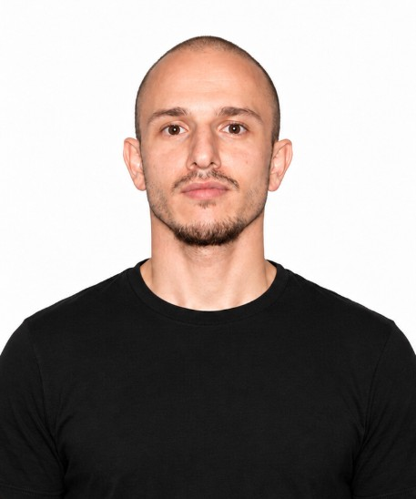

System administrator

Hallo, ik ben Mavlidin, eerstejaarsstudent graduaat server- en netwerkbeheer aan AP Hogeschool. Ik ben nieuw in de ICT en bouw mijn kennis stap voor stap op, vanaf de basis.
Ik wil graag begrijpen hoe dingen technisch in elkaar zitten. Wanneer ik iets nieuws leer, wil ik niet alleen weten wat ik moet doen, maar ook waarom.
Ik ben nieuwsgierig, leergierig en praktisch ingesteld. Ik zie mijn start in ICT als een kans om veel bij te leren.
Dit portfolio houdt mijn ontwikkeling tijdens de opleiding bij.